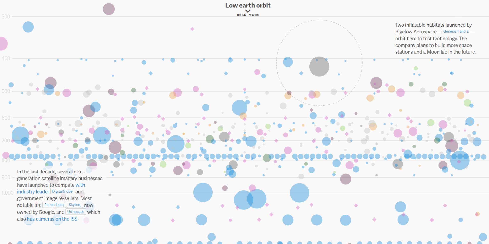

Image source: Every active satellite orbiting earth
This visualization shows more than 1300 active satellite orbiting earth right now. All the satellites are represented with a circle filled with various colors. While a mouse is hovering over any of these satellites. A box will pop out and display more details of that satellite. Information includes the purpose of that satellite, country, launch date, etc. Also, there is an option to change what meaning of the color. For example, it could represent the height of that satellite, or country of that satellite. I believe that the reason why the designer decides to allow users to swap the meaning of colors is that there are too many satellites if all information is displayed at the same time. It will look messy and unclear. I think overall this is a really nice visualization. Designer split high, medium and low earth orbits into three visualizations. If I were to design this, I would combine them into one. While users scroll up or down, swap in between them.